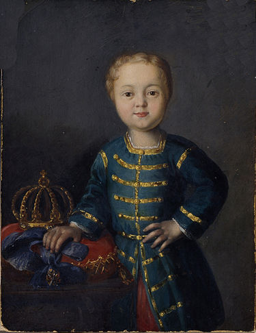
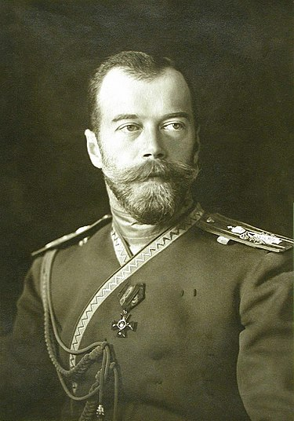

Чому Толстой вбив Гоголя?
Обставини смерті Гоголя
Викладені в Біографічній довідці Миколи Гоголя обставини його смерті, які можна прочитати в загальнодоступних енциклопедичних джерелах викликають кілька питань. Людина знаходиться під психологічним тиском. Його "друзі" свідомо заганяють його в глухий кут. Не виконують його прохань. Постійно критикують його твори. Підбурюють притаманний Гоголю містицизм, схильність до меланхолії та релігійного фанатизму. Група лікарів за свідченнями Тарасєнкова буквально намагається інсценізувати "Записки божевільного".
Речі Гоголя, чи то приховані від поліції, чи то свідомо знищені господарем будинку. При цьому вигадано романтичну казку про спалений роман. Тому ризикнемо поставити поставити питання винесено в заголовок цього есею.
Чому Толстой вбив Гоголя?
Відповідь перша: Спадкова - таємні слуги проклятих царів.
 Цю гіпотезу підказала сучасна російська письменниця Татьяна Толстая,
яка посилаючись на свого діда письменника графа Олексія Толстого -
автора роману "Петро Перший", нагадала про прокляття Алєксєя Пєтровича Романова
від якого вже сотні років здригаються носії прізвища Толстой
та більше не здригаються на троні Романови.
Цю гіпотезу підказала сучасна російська письменниця Татьяна Толстая,
яка посилаючись на свого діда письменника графа Олексія Толстого -
автора роману "Петро Перший", нагадала про прокляття Алєксєя Пєтровича Романова
від якого вже сотні років здригаються носії прізвища Толстой
та більше не здригаються на троні Романови.
 Пьотр Толстой - Пётр Андре́евич Толсто́й (1645 — 17 февраля 1729) — граф,
государственный деятель и дипломат, сподвижник Петра Великого,
один из руководителей его секретной службы (Преображенского приказа и Тайной канцелярии),
действительный тайный советник. Брат Ивана Андреевича Толстого.
Получив графское Российской империи достоинство, положил начало графской ветви рода Толстых.
Его потомками в мужском колене являются писатели Алексей Константинович,
Алексей Николаевич и Лев Николаевич Толстые, художник Фёдор Петрович Толстой и
многие другие знаменитые деятели.
Арест царевича Алексея. Тайная канцелярия
В 1717 году Толстой оказал царю важную услугу,
окончательно упрочившую его положение в период правления Петра I:
посланный в Неаполь, где в то время скрывался царевич Алексей со своей любовницей Евфросиньей,
Толстой при содействии последней ловко обошёл царевича и путём угроз и ложных обещаний
склонил его к возвращению в Россию. За деятельное участие в следствии и
суде над царевичем Толстой был награждён поместьями и поставлен во главе Тайной канцелярии,
у которой в это время было особенно много работы вследствие толков и волнений,
вызванных в народе судьбой царевича Алексея (1718). С этих пор Толстой становится
одним из самых близких и доверенных лиц государя.
Дело царевича Алексея сблизило его с императрицей Екатериной, в день коронования которой,
7 (18) мая 1724 года, Высочайшим указом императора Петра I действительный
тайный советник Пётр Андреевич Толстой был возведён, с нисходящим его потомством,
в графское Российской империи достоинство.
Пьотр Толстой - Пётр Андре́евич Толсто́й (1645 — 17 февраля 1729) — граф,
государственный деятель и дипломат, сподвижник Петра Великого,
один из руководителей его секретной службы (Преображенского приказа и Тайной канцелярии),
действительный тайный советник. Брат Ивана Андреевича Толстого.
Получив графское Российской империи достоинство, положил начало графской ветви рода Толстых.
Его потомками в мужском колене являются писатели Алексей Константинович,
Алексей Николаевич и Лев Николаевич Толстые, художник Фёдор Петрович Толстой и
многие другие знаменитые деятели.
Арест царевича Алексея. Тайная канцелярия
В 1717 году Толстой оказал царю важную услугу,
окончательно упрочившую его положение в период правления Петра I:
посланный в Неаполь, где в то время скрывался царевич Алексей со своей любовницей Евфросиньей,
Толстой при содействии последней ловко обошёл царевича и путём угроз и ложных обещаний
склонил его к возвращению в Россию. За деятельное участие в следствии и
суде над царевичем Толстой был награждён поместьями и поставлен во главе Тайной канцелярии,
у которой в это время было особенно много работы вследствие толков и волнений,
вызванных в народе судьбой царевича Алексея (1718). С этих пор Толстой становится
одним из самых близких и доверенных лиц государя.
Дело царевича Алексея сблизило его с императрицей Екатериной, в день коронования которой,
7 (18) мая 1724 года, Высочайшим указом императора Петра I действительный
тайный советник Пётр Андреевич Толстой был возведён, с нисходящим его потомством,
в графское Российской империи достоинство.
Тобто, чиновник з особливих доручень московського царя Петра їде до Європи
аби повернути царевича з еміграції. Підкупивши коханку і слуг Алєксєя
Толстой вмовляє його повернутися, при цьому дає клятву,
що має від царя повноваження гарантувати життя і безпеку Алєксєя.
Через деякий час після повернення Алєксєя заарештують і
вбивають під тортурами в яких брав участь сам цар.
Легенда свідчить, що перед смертю Алєксєй Петрович прокляв чоловіків
спадкоємців Петра на троні та нащадків Петра Толстого.
Справді, ось чоловіки на російському троні:
 Іван VI - Син Антона-Ульріха, герцога Брауншвейг-Вольфенбюттельського, та його дружини Єлизавети Мекленбург-Шверінської (у православ'ї — Анни Леопольдівни), онучки Івана V (брата Петра І). Успадкував трон у малому віці від Анни Іоанівни, що була тіткою його матері. Правив за регенства Ернста-Йоганна Бірона, герцога Курляндії і Семигалії, фаворита покійної імператриці (1740), та регенства своєї матері Анни (1741). Усунутий від престолу Єлизаветою Петрівною. Провів все життя в ув'язненні в Шліссельбурзькій фортеці. Убитий в 23-річному віці.
Пьотр ІІ - Син царевича Олексія Петровича і принцеси Софії Шарлоти Бланкенбурзької-Вольфенбюттельської, онук Петра І народився 23 жовтня 1715 у Санкт-Петербурзі. Вступивши на престол 18 (7) травня 1727, Петро II на перших порах свого правління повністю перебував під впливом князя Олександра Меншикова, котрий перевіз його до свого палацу та заручив зі своєю донькою Марією. Проте уже в липні 1727 під час хвороби князя його опонентам вдалося не лише вивести імператора з-під його опіки, а й добитися для Меншикова відправки в заслання. 19 (8) вересня 1727 імператор оголосив про початок свого самостійного правління.
Утім через його юний вік та непідготовленість до самостійного правління найзначніший вплив на вирішення державних справ справляли Андрій Остерман, князі Голіцини та князі Долгорукови. Сам же імператор віддавався полюванню та іншим світським розвагам. На початку 1728 імператорський двір переїхав до Москви, де 7 березня (25 лютого) 1728 відбулася коронація Петра II. Незважаючи на наполегливі спроби Остермана, інших соратників Петра I та навіть деяких зарубіжних дипломатів схилити Петра II до повернення столиці до Санкт-Петербурга, двір до самої його смерті залишався в старій столиці. 11 грудня (30 листопада) 1729 відбулися заручини імператора з дочкою князя Долгорукова, але шлюбу завадила рання смерть Петра. Під час підготовки до весілля з Катериною Долгоруковою помер від натуральної віспи. Останнім з російських монархів був похований в Архангельському соборі Московського Кремля. З його смертю закінчився рід Романових по чоловічій лінії.
Пьотр ІІІ - Петро III Федорович (Карл Петер Улріх фон Гольштайн-Ґотторп, нім. Karl Peter Ulrich von Holstein-Gottorp) (10 (21) лютого 1728, Кіль, Гольштейн — 6 (17) липня 1762, Ропша, Російська імперія) — імператор Росії (1761–1762 рр.). У січні 1762 вступив на російський престол. За правління Петра III у внутрішній політиці проведено ряд заходів, що розширили привілеї дворянства (1762), ліквідував Таємну канцелярію, заборонив селянам подавати скарги на їх власників тощо. Зовнішня політика Петра III, запровадження прусських порядків в армії, привело до створення опозиції у російській гвардії, яку очолила його дружина Катерина. Внаслідок палацового перевороту 1762 був усунений від влади, ув'язнений у Ропші і незабаром, з відома Катерини II, вбитий.
Павєл - Павло I (20 вересня (1 жовтня) 1754, Санкт-Петербург — 12 (24 березня) 1801, Санкт-Петербург) — російський імператор з 6 (17).11.1796. Син Петра III і Катерини II. Українські прихильники автономії сподівалися, з приходом до влади Павла І, на послаблення централістської політики російської адміністрації (у ній значну роль відігравали урядовці українського походження — Олександр Безбородько, Дмитро Трощинський, Віктор Кочубей, брати Андрій та Іван Гудовичі та ін.) щодо України. Ходили навіть чутки про відновлення гетьманства на чолі з сином Павла I великим князем Костянтином і регентом А. Гудовичем. Однак, єдине, що було зроблено урядом Павла I, це поновлено підкоморський суд (1796) та застосування норм магдебурзького права. Незадоволення внутрішньою та зовнішньою політикою Павла I широких дворянських та військових кіл, його психологічна неврівноваженість і самодурство, викликало ряд змов придворної аристократії — т. зв. «Смоленська змова» 1798 та гвардійська змова 1800-01, яка завершилась вбивством Павла I в ніч з 11(23) на 12(24).3.1801 у Михайлівському замку. Російський престол зайняв його син Олександр I.
Алєксандр І - Олекса́ндр І Па́влович «Благословенний»[3] (12 (23) грудня 1777, Санкт-Петербург — 19 листопада (1 грудня) 1825, Таганрог) — російський імператор з 1801 року. Старший син імператора Павла I та Марії Федорівни. Зайняв престол після вбивства свого батька Павла І в результаті палацового перевороту. В останні роки життя нерідко казав про намір зректися престолу і «віддалитися від світу», що після його несподіваної смерті в Таганрозі породило легенду про «старця Федора Кузьмича». Згідно з цією легендою, в Таганрозі помер і був потім похований не Олександр, а його двійник, у той час як імператор іще довго жив старцем-відлюдником у Сибіру і помер у Томську у 1864 році[4].
Ніколай І - Мико́ла I Рома́нов (рос. Романов Николай Павлович; 25 червня (6 липня) 1796 — 18 лютого (2 березня) 1855) — російський імператор (1825—1855). Третій син Павла І. Період його правління позначився зміцненням самодержавства та російського шовінізму. Зайняв престол після раптової смерті свого брата, імператора Олександра І і жорстокого придушення повстання декабристів у 1825. Поразка Росії у Кримській війні 1853—1856 стала причиною глибокої кризи всього режиму, встановленого Миколою І і прискорила його смерть.
Алєксандр ІІ - Олекса́ндр ІІ (17 [29] квітня 1818 — 1 [13] березня 1881) — російський імператор з 1855 до 1881 року. Старший син Миколи І. Здійснив ряд реформ: військову, земську, судову, у 1861 скасував кріпосне право. Ця реформа, яку апологети самодержавства представляли як велике благодійництво, насправді була здійснена в максимальних інтересах землевласників і боляче вдарила по селянах. Класик української літератури Панас Мирний назвав її «Голодною волею»[4]. Вбитий 1 березня 1881 у Петербурзі народовольцем І. Гриневицьким.
Алєксандр ІІІ - Олександр III ((26 лютого (10 березня) 1845, Анічков палац, Санкт-Петербург, Російська імперія — (20 жовтня (1 листопада) 1894, Лівадійський палац, Лівадія, Таврійська губернія, Російська імперія) — російський імператор з 1 березня 1881 року. Сучасники і пізніші історики визнають його персональною історичною заслугою — Росія за його правління не вела жодної війни. Пережив декілька замахів в одному з яких брав участь брат Ульянова (Леніна) Олександр, а також катастрофу залізничного потягу. Помер у 49 років.
 Ніколай ІІ - Микола II Рома́нов (6 (18) травня 1868 — 17 липня 1918) — останній російський імператор (1 листопада 1894 — 15 березня 1917), старший син Олександра III та Марії Федорівни. Продовжував реакційну внутрішню і зовнішню політику свого попередника, спрямовану на зміцнення самодержавства, посилення жорстоких репресій щодо національно-визвольного руху поневолених народів імперії та розширення колоніальних володінь. За Миколи II Росія зазнала поразки в російсько-японській війні 1904-1905. У період правління Миколи II відбулася перша російська революція 1905—1907, події якої примусили уряд піти на проведення обмежених конституційних реформ. За Миколи II Російська імперія вступила в Першу світову війну. 23 жовтня 1915 Микола II зайняв пост Верховного головнокомандувача російської армії. Невдачі на фронті, величезні втрати, розруха, голод викликали незадоволення самодержавством у всіх колах суспільства. Лютнева революція 1917 в Росії ліквідувала монархію. 2(15) березня Микола II зрікся престолу. 8(21) березня 1917 був заарештований в Олександрівському палаці (Царське Село) і відправлений в Тобольськ, а згодом у Єкатеринбург. У ніч із 16 на 17 липня 1918 року Миколу II та членів його сім'ї розстріляно в Єкатеринбурзі. На правлінні Миколи ІІ скінчилося 300-річне правління династії Романових, російська абсолютна монархія, феодальний суспільний лад в країні та існування Російської імперії як держави.
Його брат Міхаїл - Миха́йло II Олекса́ндрович (22 листопада (5 грудня) 1878, Петербург — †13 червня 1918, поблизу Пермі) — великий князь, четвертий син Олександра III, молодший брат Миколи II, генерал-ад'ютант свити імператора, член Державної Ради. За відомостями деяких істориків вважається останнім імператором Росії, що правив тільки день (брат звернувся до нього в телеграмі як до «імператора Всеросійського Михайла Другого», тобто Михайлом I вважався цар Михайло Федорович). Розстріляний більшовиками в Пермі в червні 1918 році. Існує розповідь, згідно з якою він перед розстрілом, роззувшись, кинув чоботи своїм вбивцям і сказав: «Носите, ребята, всё-таки царские…» (ці слова приписують також історикові великому князеві Миколаю Михайловичу, розстріляному в січні 1919 році).
Його син АЛЄКСЄЙ - Його́ Імпера́торська Висо́кість Спадкоє́мець Цесаре́вич і Вели́кий Кня́зь Олексі́й Микола́йович (Рома́нов); 30 липня (12 серпня) 1904, Петергоф — 17 липня 1918, Єкатеринбург) — п'ята дитина і єдиний син Миколи ІІ та Олександри Федорівни, спадкоємець імператорського трону. По лінії матері Олексій Миколайович успадкував гемофілію, носіями якої були й деякі дочки й внучки англійської королеви Вікторії. Розстріляний на руках у батька разом з матір'ю та сестрами в Єкатеринбурзі, в Іпатієвському домі у ніч з 16 на 17 липня 1918 року.
Смерть хлопчика Алєксєя Романова (зверніть увагу на ім'я) стала страшною крапкою в історії проклятої Алєксєєм Романовим династії.
Толстой був обраний для аналогічної місії за спадковою ознакою. Повернути із Європи знакову фігуру - зірку і загасити її може лише Толстой. Ось, до речі портрет сучасного Петра Толстого - віце-спікера Госдуми, телепропагадиста і шовініста. Отак, подивишся на фамільні портрети і повіриш в переселення душ.
Відповідь друга: Кар'єра особливих доручень
Задля кар'єри звичайно. Тому спробуйте для почину початок кар'єри нашого героя-кілера
Так не буває?
Цілком реальна особа - артилеріст, кавалергард, морський спецназівець, дипломат, жандарм розвідник, губернатор, пенсіонер в 40 років. Нікого не нагадує? Подивіться на портрет. Чиновник по особливим дорученням. Рання сивина на скроні і чорні вуса. Ось мабуть (?) з кого постсовєцькій постмодерніст Борис Акунін писав Ераста Петровича.
До речі, "друг та співавтор" Бориса Акуніна Григорій Чхартішвілі в своїй книзі "Писатель и самоубийство" наполягає - смерть Гоголя не самогубство. Отже - його вбили?
Але повернемося до Толстого. Що ж робить цей суперкар'єрист у відставці? Лікується на водах у Європі. Знайомиться там з Гоголем. У них виникає міцна чоловіча дружба, яка міцніє під час мандрувань курортними трактами під розмови про проблеми шлунково-кишечних трактів. За мандри і лікування платить Толстой. Згодом він вмовлає (запрошує) Гоголя повернутися до Росії і оселитися в квартирі в московському будинку Толстого.
Результати цієї дружби для Гоголя
Геній перевтілення, який вміє говорити найважливіше від чужого імені публікує (цензура не проти) приватні листи під назвою "Ізбранниє мєста ...", які пересварять його з друзями та розчарують читачів.
Дотепний гострослов і володар дум російських інтелектуалів перетворюється на нудного мораліста з геть несмішними претензіями на православне месіанство.
Аматор і найкращий оспівувач життя страждає натурально від живота. Примітка: живот давньоруською і є життя.
Сміливець, який звинучавав сучасників в торгівлі мертвими душами, власноруч розмальовував обкладинку книги черепушечками і наполягав, що ніякі це не Похождения Чічікова, а Мертві душі, боїться заснути летаргічним сном і бути похованим заживо. майстер приготування та поїдання пасти з пармезаном та ентузіаст післяобідньої кави доводить себе до смерті голодом.
Оспівувач і багаторічний мешканець вічного міста - Рим; Завсідник римських траторій та паризьких ресторанів преться (ймовірно за порадою та за підтримки Толстого) на прощу до Ієрусалиму та Константинополя (з буржуазної модерної Європи до допотопної Азії - тогочасна турецька імперія - ісламській халіфат) звідки повертається виснаженим і зневіреним.
Навіжений письменник який заради публікації і успіху у публіки був готовий об'їздити на чорті пів імперіії, стати на коліна перед царицею, долетіти до середини Дніпра, обвести навколо пальця цензуру і самого царя, але залишитися вільною людиною - сам спалить свою найважливішу книгу в грубці толстовського палацу. Петербурзький денді, знавець європейської моди (чоловічої і жіночої -"фєстончики") не матиме пристойного костюма аби лягти в гроб.
До речі, всі ці байки про "летаргічним сном", "спалив другий том", "вбив себе голодом", "залишив після себе залатаний сюртук" ми звідки знаємо? З дому Толстого - від його слуг. "Найкращий друг і гостинний господар" виставляє Гоголя Маніловим, Башмачниковим, Поприщиним, Плюшкіним. Хіба так говорять про померлих друзів? Ні. так брешуть, коли хочуть "загасить звезду" за тонким висловом Володимира Сорокіна (читай "День опричника"). Твори Гоголя зникнуть після смерті під романтичну легенду про спалення другого тому
Результати цієї дружби для Толстого
"Раптом" імперія згадала давно відставленого чиновника з особливих доручень і після очолювання Нижегородського ополчення в Кримській війні (де ще воювати за кримнаш як не на Волзі?) призначила Толстого Обер-ПРОКУРОРОМ Священого Синода (1856-1962). Не останньою людиною в імперії був цей карабас-барабас (привіт автору "Пригод Буратіно" А. Толстому) призначений смикати за мотузочки бородатих пузанів в пронафталінених чорних жіночих платтях, що грають митрополитів та єпископів. На сьогоднішні гроші це Владімір Гундяєв, агент КГБ відомий під псевдо "патріарх Кіріл". І проблеми з трактом кудись поділися разом з архівом (творами) генія, владна подяка і не такі хвороби лікує.
Відповідь третя: Тому що ворог...
Ще одна деталь після опубліковання некролога на смерть Гоголя Іван Сергійович Тургєнєв був засуджений до домашнього арешту, і довгий час був на контролі у поліції унаслідок конфлікту з російським імператором Миколою I. Під вартою Тургенєв провів місяць, після був засланий у свій маєток Спаське-Лутовиново на півтора року. Ще три роки він не міг виїхати за кордон. Якщо за некролог в газеті карають відомого письменника і просто заможного дворянина, то хто помер? "Великий Писатель Зємлі Руськой" чи ворог імперії? Натомість, Толстой який так опікувався письменником і "допоміг" Гоголю вчасно померти і знищити небезпечні твори відновлює для себе кар'єрні перспективи. На це "ортодоксальний мораліст" Микола Гоголь перевернувся таки в гробу та вчинив "другу" страшну помсту вигукуючи тихим голосом з могили на весь світ:
Из поэмы (т. I, гл. 5) «Мертвые души» (1842) Н. В. Гоголя (1809— 1852).
Слова помещика Собакевича, сказанные в беседе с Чичиковым:
«Я их знаю всех: это все мошенники, весь город там такой: мошенник на мошеннике сидит и мошенником погоняет. Все христопродавцы. Один там только и есть порядочный человек: ПРОКУРОР; да и тот, если сказать правду, СВИНЬЯ».
Краще і не скажеш.
Страшна помста Генія